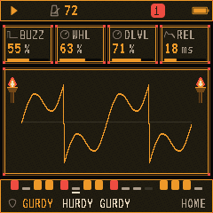
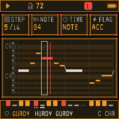
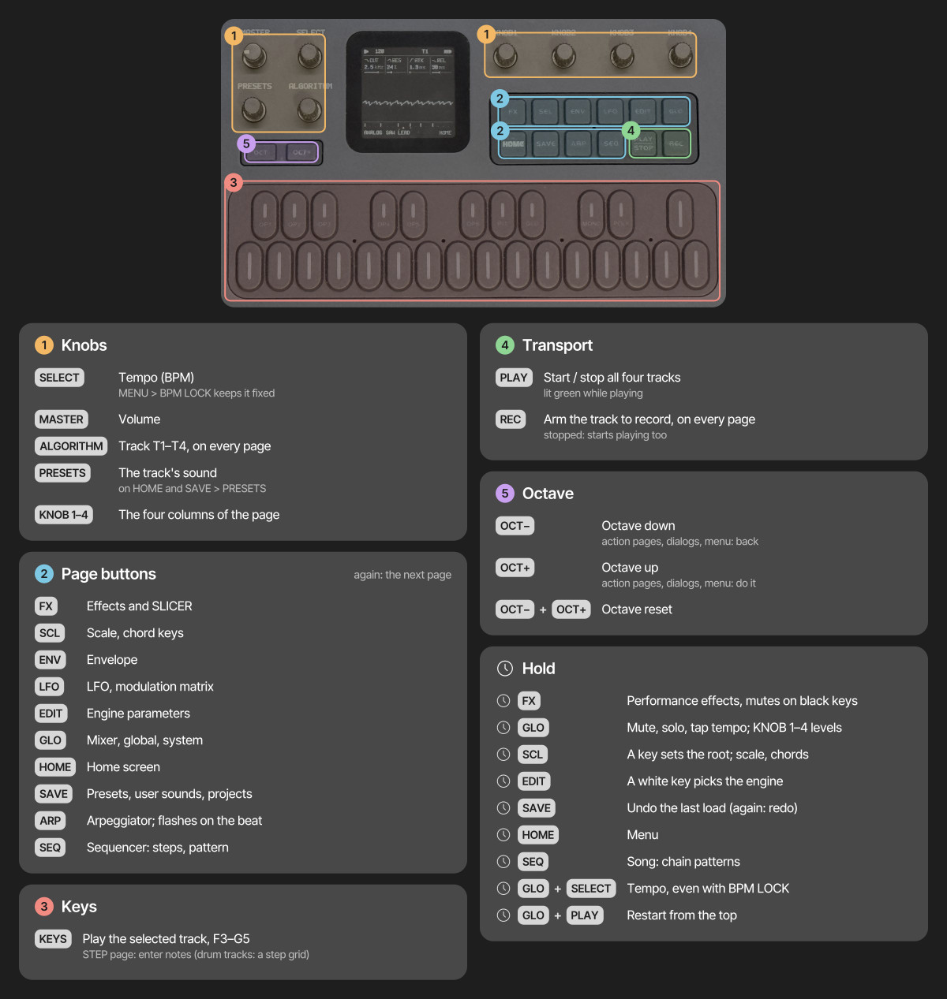
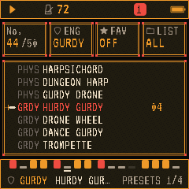
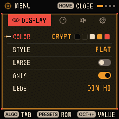

GHOULBOX turns the M-VAVE FM-1 into a dungeon-synth instrument: hurdy-gurdies and drones, crypt pads and monk choirs, organs, harps and recorders, all through a cathedral reverb and a worn cassette.
It is a fork of Felucca, the open-source FM-1 firmware by Hügelton Instruments. Everything Felucca does still works here: four tracks, a 64-step sequencer, songs, the arpeggiator, chord keys, effects, the web editor and backups. GHOULBOX adds the sounds, the reverb and tape, a hurdy-gurdy engine and an old-RPG look, and leaves out the sounds that don't fit the genre.
To return to Felucca, install it from hugelton.github.io/Felucca and restore your backup in its editor. Its Return to official V15 button puts back M-VAVE's own firmware.
Projects and user presets from Felucca load in GHOULBOX. Sounds GHOULBOX no longer lists (for example the techno presets or the drum kit) still load and play inside an old project; they are only missing from the menus.
GHOULBOX powers on ready to play a small dungeon piece.


The FM-1's controls, as Felucca (and GHOULBOX) use them. Tap a page button for its page, tap again for the next page in its group, and hold some of them for quick layers.

Panel diagram from Felucca's documentation (Hügelton Instruments, GPL-3.0). The screen in it shows Felucca's look; GHOULBOX's is on the next page.
Hold FX, GLO, SCL or EDIT to put shortcuts on the keys and knobs; the screen shows the map. Double-tap one to keep its layer open; tap again to close it. In the EDIT layer, each white key picks an engine. OCT+ confirms and OCT− goes back, on every action page and dialog.
GHOULBOX draws Felucca's pages as an old role-playing game would: stone windows, a pixel font, flickering wall torches beside the scope, and a sword that points at what is selected.


Each page button opens a group of pages; tap it again for the next. On every page, KNOB 1–4 change the four values shown.
| Button | Pages (tap again for the next) |
|---|---|
| HOME | HOME: the engine's four main controls and the scope |
| ENV | ENV (attack, decay, sustain, release) · ENV DEST |
| LFO | LFO · LFO DEST · MOD (the modulation matrix) |
| FX | FX (the track's sends: distortion, chorus, delay, reverb) · SLICER · DLY · REVERB · CHORUS · TAPE |
| SCL | SCL (root, scale, white-key mode, transpose) · CHORD |
| EDIT | The engine's own parameters (two pages of four) · VOICE (poly, mono, legato, unison, glide) · SLICES (on the SLICE engine) |
| GLO | MIXER · GLOBAL (tempo, swing, clock, tune) · SYSTEM (MIDI and sync) |
| SAVE | PRESETS · USER (your 32 sounds) · PROJECT (4 projects) · TOOLS |
| ARP | ARP (arpeggiator) |
| SEQ | STEP (piano roll) · PATTERN · PHRASES (load a factory pattern) · CHANCE · AUTOMATION; hold SEQ for SONG |
59 sounds across 13 engines. Hear them all at jasonpersinger.github.io/ghoulbox-fm1-dungeon-synth/sounds. GB marks GHOULBOX's own; the rest are Felucca's that fit the genre.
{{SOUNDS}}The SAMPLE engine plays four real instruments, recorded by Versilian Studios and released into the public domain (CC0): a bowed psaltery (a medieval zither played with a bow), a Renaissance chamber organ, a baroque tenor recorder and a folk harp. Held notes on the first three sustain for as long as you hold the key. SAMPLE's SET knob lists them first, then your own samples (USR1–USR3, uploaded from the web editor).
A hurdy-gurdy plays one melody note at a time over drones that never stop. Its eight controls (EDIT):
| Control | What it does |
|---|---|
| DRN | The drone's note (C–B): set it to your song's key |
| DLVL | Drone level |
| 5TH | A second drone a fifth above, and its level |
| WHL | Wheel pressure: darker when low, brighter and rougher when high |
| BUZZ | The trompette, a buzzing bridge: how hard it rattles |
| COUP | When it buzzes: always (HOLD) or rhythmic strokes in time (1/4, 1/8, 1/8T, 1/16) |
| BODY | The wooden body's resonance |
| WOBL | The wheel's unevenness: a slow wander in pitch and loudness |
The DRUM engine's CRYPT kit is built for dungeon synth: a low frame drum, a rope snare, a hand slap, a shaker, jingles, a timpani, a wooden stick and a gong. Two sounds use it: CRYPT KIT and TOMB DRUMS (lower and drier), both suggesting the TOMBBEAT pattern. The keys follow the General MIDI drum map (C the frame drum, D the rope snare, A the timpani), and on a DRUM track SEQ › STEP is a drum grid. KIT also offers Felucca's kits (STD, 80, 10, 66, 55, 77) if you want something less ancient.
Each track sends to shared effects; their amounts are on the FX page (KNOB 1–4: distortion, chorus, delay, reverb). Tap FX again to reach the effects themselves.
A delay (time, feedback, colour, mix) and a chorus (rate, depth). With HALL selected, the delay is limited to 0.74 s, because the hall borrows part of its memory.
Hold FX to play performance effects from the keys (repeat, reverse, filter sweeps, tape stop, freeze, a harmonizer) and mute tracks with the black keys. With MENU › FX LATCH on, they toggle instead of needing to be held.
Each track has its own sequence of up to 64 steps, with chords, ties, accents, slides, per-step chance and ratchets.
SEQ › PHRASES lists ready-made patterns to load into the selected track. GHOULBOX adds nine, in D minor, over the power-on scene's chords: DIRGE (slow pad chords), BALLAD (a melody), CHANT (low voices) and PEDAL (one held low D), which the power-on scene uses, and MARCH (a stepping bass), LAMENT (a falling melody), ARPEGGIO (broken chords for harp or lute) and ANTIPHON (a call answered an octave lower); and TOMBBEAT, a slow beat for the CRYPT drums. Loading a sound never changes your pattern, and loading a pattern never changes your sound.
On SCL, set QNT to WHITE to play the chosen scale on the white keys only. For dungeon synth, natural minor (MIN), Dorian (DOR), Phrygian (PHRY) and harmonic minor (HARM) are all at home. Tap SCL again for CHORD: one finger then plays a chord of the scale.
Hold SEQ for SONG, to chain patterns A–D into a longer piece.
Hold HOME for the menu. ALGORITHM moves between its four tabs, PRESETS through the rows, and any knob or OCT− / OCT+ changes a value. Press HOME to close it.
| Tab | Settings |
|---|---|
| DISPLAY | COLOR (palette; GHOULBOX's is CRYPT) · STYLE (FLAT or LINE) · LARGE (bigger knob cards) · ANIM (rolling digits on or off) · LEDS (OFF, DIM LO, DIM HI, INV) |
| CONTROL | HOLD (how long a quick layer takes to open) · KNOB ACCEL · FX LATCH · BPM LOCK (SELECT stops changing the tempo) |
| AUDIO | SPEAKER EQ (FLAT, LOWCUT, BASS+; keep FLAT when recording) · USB LEVEL (MASTER or FIXED) |
| SYSTEM | USB SERIAL (OFF from 1.2 on; turn it ON only for Felucca's developer console, and keep it OFF on macOS 13–15 so the USB audio input appears) · HARDWARE CALIBRATION · ABOUT (the version) |
The FM-1 appears on a computer as a USB audio input named "Felucca", carrying the master output at 44.1 kHz with no driver. Set SPEAKER EQ to FLAT, and USB LEVEL to FIXED if you want a level that doesn't follow the MASTER knob.
A MIDI keyboard or computer (USB) plays the FM-1: MIDI channels 1–4 play tracks 1–4 (MENU › SYSTEM › ROUT CH1-4), or set ROUT to SEL for every channel to play the selected track. From 1.2, these control changes turn the FM-1's controls, on the channel's track:
| CC | Control |
|---|---|
| 7 · 10 | Track level · pan |
| 73 · 75 · 79 · 72 | Attack · decay · sustain · release |
| 91 · 93 · 94 | Reverb · chorus · delay sends |
| 21–24 | The four engine knobs (the HOME page's) |
| 85 · 86 | CRSH · TAPE (the whole mix) |
| 74 | The FX layer's filter on the whole mix: below 64 low-pass, above high-pass, 64 off (it resets when the FX layer is let go) |
On the selected track, while it is armed (REC), track moves are recorded as automation, as when turning its knob.
Starting points. Load the sound with PRESETS, then adjust.
CRYPT PAD or DARK STRINGS on a track, the DIRGE pattern from SEQ › PHRASES, REVERB SIZE high, TAPE around 60. Slow everything down: tempo 60–70, DIV 1/4 or 1/2.
HURDY GURDY with DRN set to your key. Use COUP 1/8 for rhythmic buzz strokes on a dance tune, or BUZZ at zero for a sad, plain drone.
MONKS on one track and CRYPT CHOIR an octave above on another, the CHANT pattern, REVERB HALL with SIZE at maximum. Add PIPE ORGAN or REN ORGAN holding the root.
FOLK HARP or LUTE on an arpeggio (ARP), TENOR RECORD or LOFI FLUTE for the tune, BAGPIPE for a reedy lead over its drones.
Any of the above with TAPE 80–100 and CRSH 30–50: the sound of a 1990s dungeon-synth tape.
| Problem | What to try |
|---|---|
| No sound | Turn up MASTER; check the track isn't muted (GLO › MIXER); headphones in the jack silence the speaker. |
| The installer can't find the FM-1 | Use a USB data cable, close other music software, use Chrome or Edge. |
| The installer stops after "update mode" | Unplug and replug the USB cable and press Install again. The FM-1 waits in update mode until finished. |
| "NO SAMPLE" and a plain tone | The SAMPLE or GRAIN source is an empty user slot (USR1–3). Pick a built-in set or upload a sample in the web editor. |
| A keyboard or DAW plays the wrong track | MENU › SYSTEM › ROUT: CH1-4 sends channels 1–4 to tracks 1–4 and ignores 5–16; SEL sends every channel to the selected track. |
| No USB audio on a Mac | MENU › SYSTEM › USB SERIAL OFF (macOS 13–15). |
| The screen is black after an interrupted update | If the computer sees a device named WL80UBOOT, the FM-1 is in its boot mode and can be recovered: try another cable and run the installer again. Felucca's README describes further recovery. |
| Something else | Report it at github.com/jasonpersinger/ghoulbox-fm1-dungeon-synth/issues with your OS, browser and the installer's log text. |
GHOULBOX © 2026 Jason Persinger. Free software under the GPL-3.0-only licence; the source is at github.com/jasonpersinger/ghoulbox-fm1-dungeon-synth.
Built entirely on Felucca by Leo Kuroshita / Hügelton Instruments (GPL-3.0-only). Please support the original: GitHub Sponsors (hugelton) or itch.io (hugelton.itch.io/felucca).
M-VAVE and FM-1 are trademarks of their respective owners. GHOULBOX is not affiliated with or endorsed by them or by Hügelton Instruments.